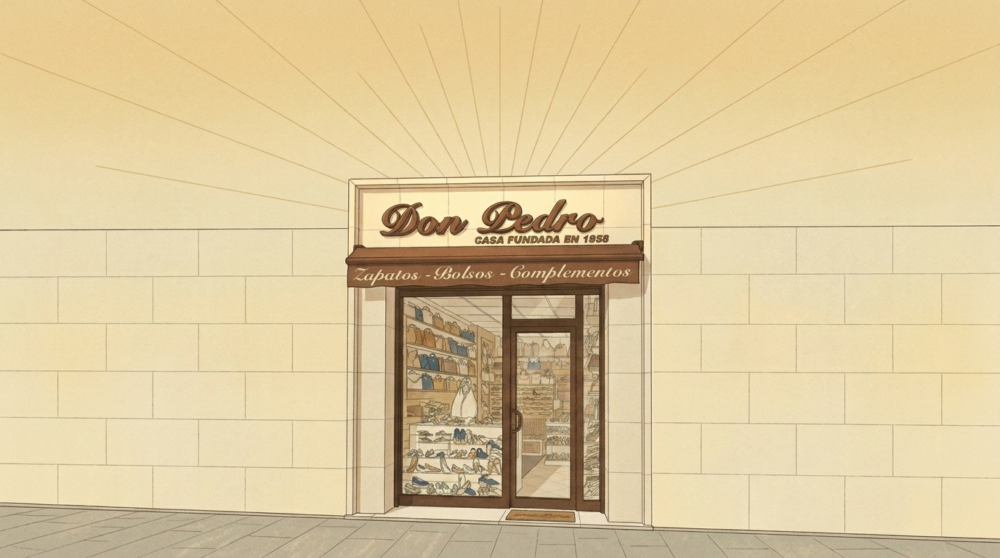

1 Outpaint the attached vertical illustration into a wide 16:9 landscape image. Keep the shop facade EXACTLY as it is (same drawing, same size relative to the image height, same sign "Don Pedro", same awning text, same window and door), centred horizontally. The facade should occupy about the lower 60 percent of the height, with the golden sky and thin sun rays above it, as in the original. Extend the scene to the left and right with plain neighbouring cream stone-tiled walls of the same building (no other shops, no signs, no windows with text, no people), the same sidewalk continuing, and the same golden sky with sun rays. Same style, lines, grain and palette. No new text.

2 Outpaint the attached vertical illustration into a wide 16:9 landscape image. Keep the shop facade EXACTLY as it is (same drawing, same size relative to the image height, same sign "Don Pedro", same awning text, same window and door), centred horizontally. The facade should occupy about the lower 60 percent of the height, with the golden sky and thin sun rays above it, as in the original. Extend the scene to the left and right with plain neighbouring cream stone-tiled walls of the same building (no other shops, no signs, no windows with text, no people), the same sidewalk continuing, and the same golden sky with sun rays. Same style, lines, grain and palette. No new text.